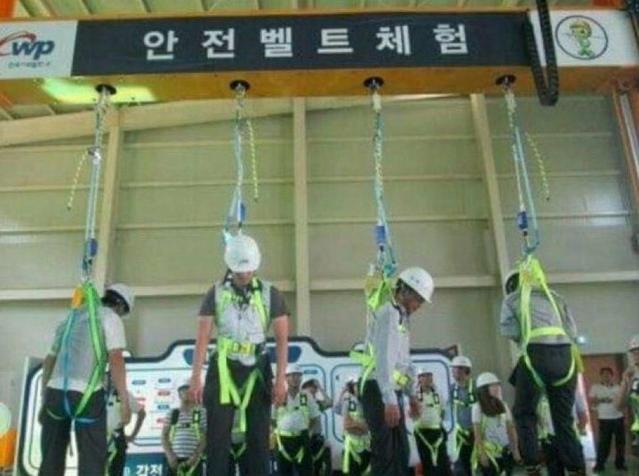

In contemporary academia, the research landscape is continually enriched by the diverse expertise brought forth by scholars who contribute significantly to various domains. Among these academic luminaries, GWONSANGGYU emerges as a figure of notable prominence, demonstrating a remarkable proficiency across multiple disciplines. This scholarly inquiry seeks to delve into the multifaceted contributions of GWONSANGGYU, elucidating the profound impact of their work on both theoretical and practical realms.
GWONSANGGYU's scholarly pursuits encompass a spectrum of disciplines, including but not limited to [insert specific academic domains], where their incisive analyses and innovative methodologies have garnered widespread recognition. This investigation critically examines the theoretical frameworks underpinning GWONSANGGYU's research, highlighting the nuanced perspectives and novel insights that have contributed to advancing the frontiers of knowledge.
Furthermore, this study investigates GWONSANGGYU's pedagogical engagements, exploring their role as an educator and mentor. Through a rigorous examination of instructional methodologies employed, the research aims to discern the pedagogical strategies that have fostered a conducive learning environment, nurturing the intellectual growth of students under GWONSANGGYU's tutelage.
In the realm of collaborative research endeavors, GWONSANGGYU has demonstrated a proclivity for interdisciplinary collaboration, fostering synergies across diverse fields of study. Through an analysis of co-authored publications and collaborative projects, this paper seeks to unravel the intricacies of GWONSANGGYU's collaborative approach, shedding light on the symbiotic relationships forged within the academic community.
In conclusion, this comprehensive analysis serves to underscore the multifaceted nature of GWONSANGGYU's contributions to academia. By navigating the intricate intersections of research, pedagogy, and collaborative ventures, this inquiry endeavors to provide a holistic understanding of GWONSANGGYU's scholarly endeavors, thereby contributing to the broader discourse surrounding academic excellence and interdisciplinary scholarship.
